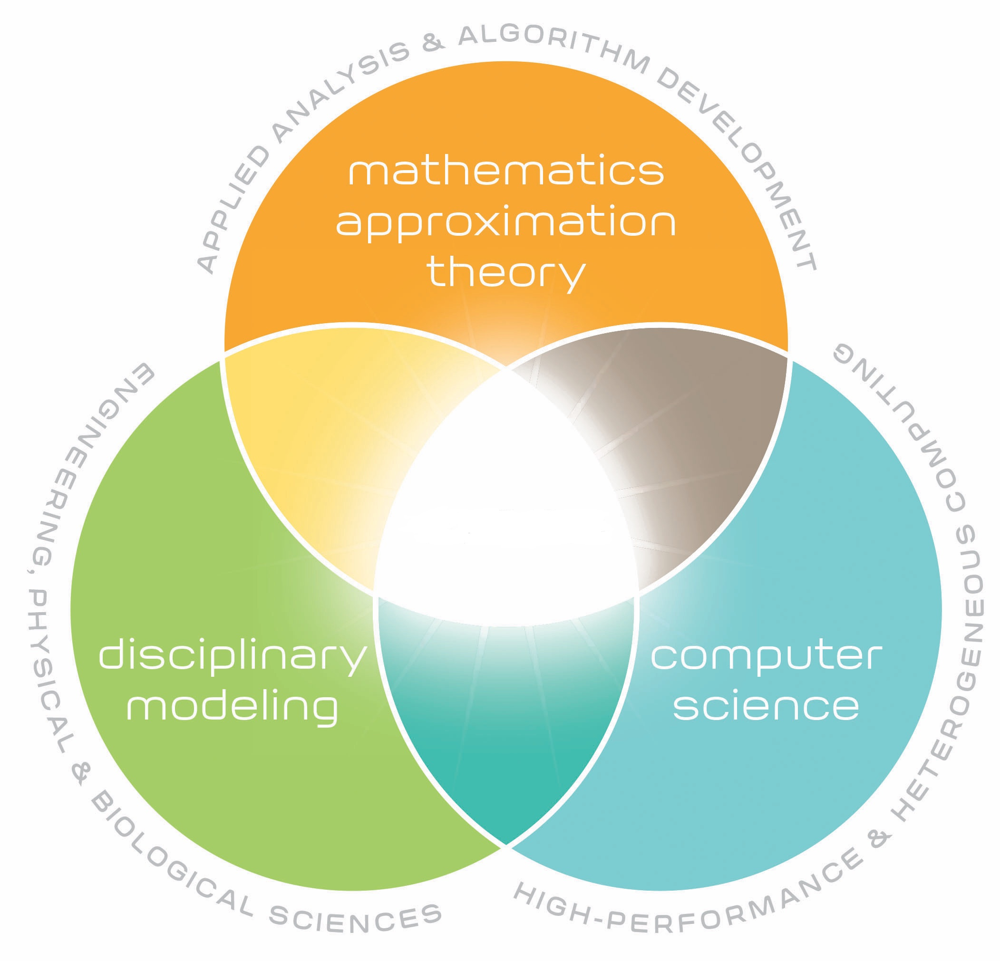

The program is a collaboration between seven departments and classical disciplines:
The program is multidisciplinary and all students who have completed undergraduate studies in science and engineering, with a sufficient quantitative background, are eligible.
The program will educate the next generation of cross-disciplinary science students with the knowledge, skills, and values needed to pose and solve current and new scientific, technological and societal challenges. The program will lay the foundation for cross-disciplinary educational, research and innovation activities.
It is the first educational program to comprehensively treat computation as the triple junction of algorithm development and analysis, high performance computing, and applications to scientific and engineering modeling and data science. This approach recognizes computation as a new discipline rather than being decentralized into isolated sub-disciplines. The CS program enable application-driven computational modeling while also exposing disciplinary computational scientists to advanced tools and techniques, which will ignite new transformational connections in research and education.

The new proposed program will also take a leading responsibility in further developments of the highly successful Computing in Science Education initiative at UiO. Master of science thesis projects linked up to the CSE project will be offered. For future discussions: how to link with CCSE.
If the program becomes successful, it will naturally lead to new cross-disciplinary research. And perhaps for a new department in computational science!! Back to Hans Petter slides from 2005.
The program aims at offering thesis projects in a variety of fields. The scientists involved in this program can offer thesis topics that cover several disciplines. These are
The thesis projects will be tailored to the student's needs, wishes and scientific background. The projects can easily incorporate topics from more than one discipline.
In order to build a common study program and identity as a Computational Science student, we plan be two compulsory courses that aim at providing topics of common and broad interest.
The program aims at reorganizing many of the existing courses. Here follows a list of suggested courses that students may include in their required course load.
...Hi folks,
A substantial number of current nuclear theory grad students are thinking about pursuing a dual PhD in CMSE, and it seems that it’s becoming a useful recruiting tool elsewhere in the physics department. I suspect it will be useful for nuclear theory as well. To that end, a description of the CMSE PhD program, which is useful for explaining the value of a dual PhD, can be found here
And a description of the dual PhD can be found here.....